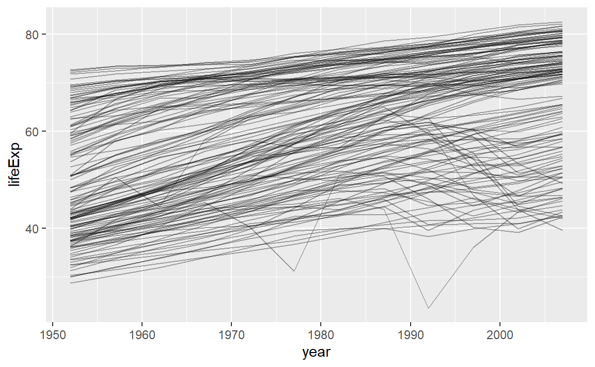
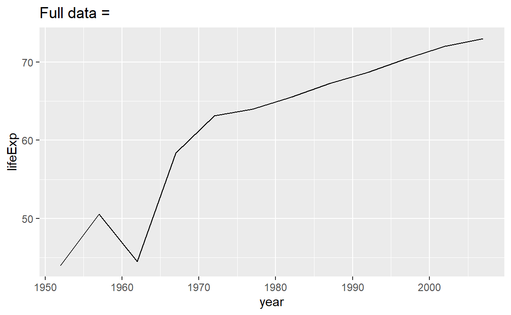
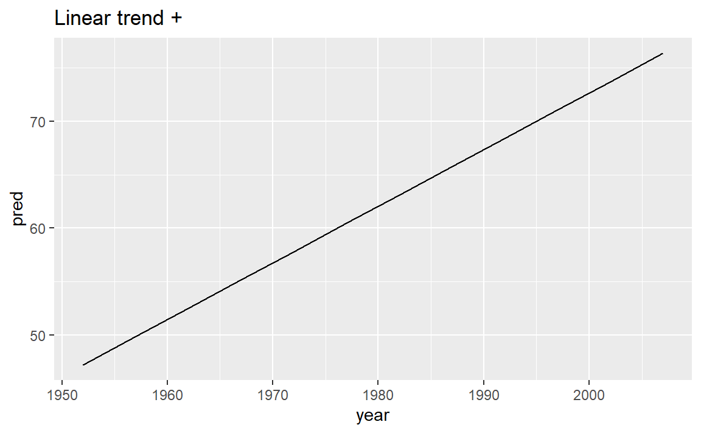
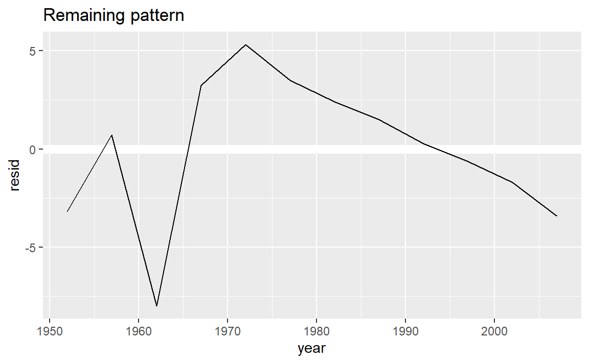
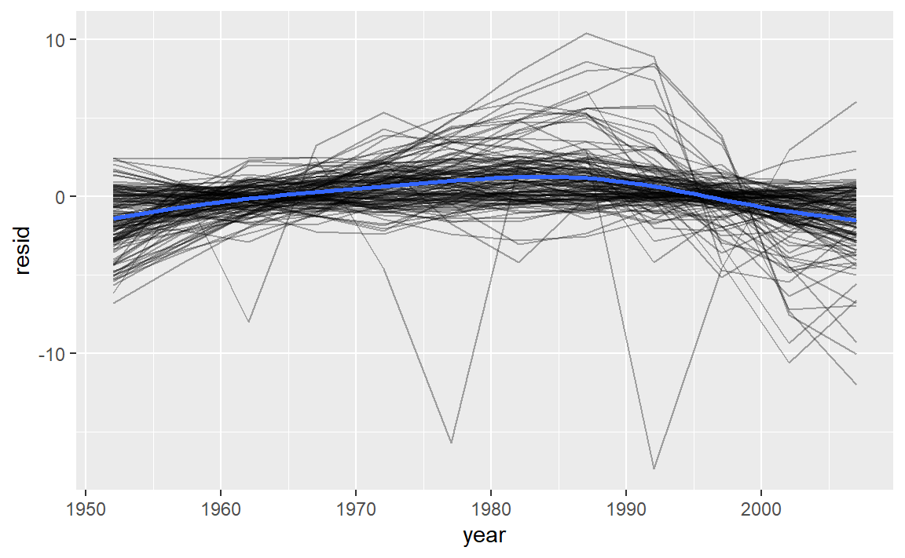
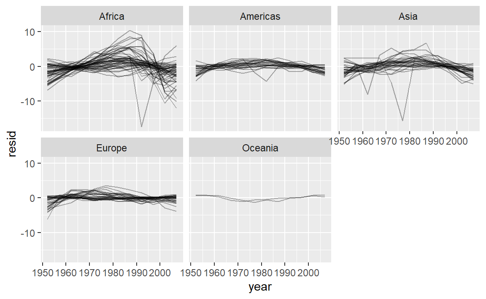
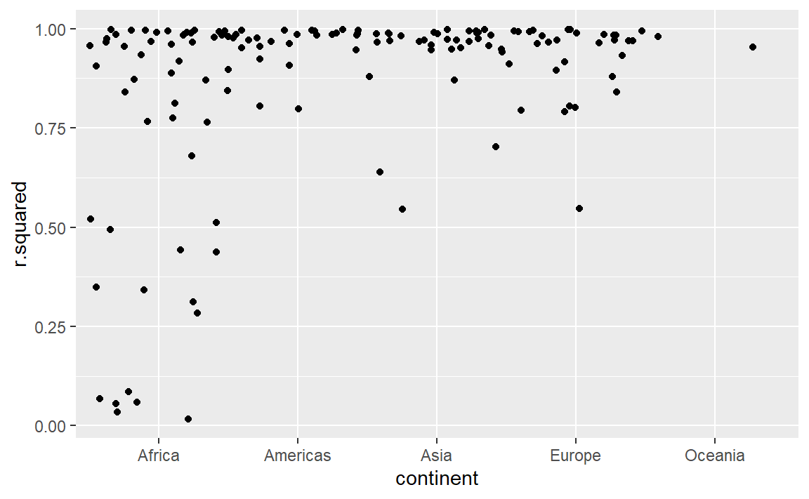
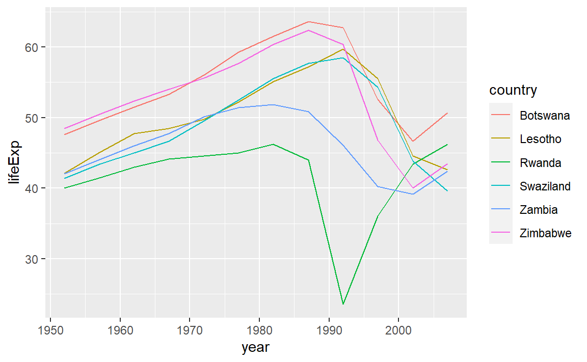
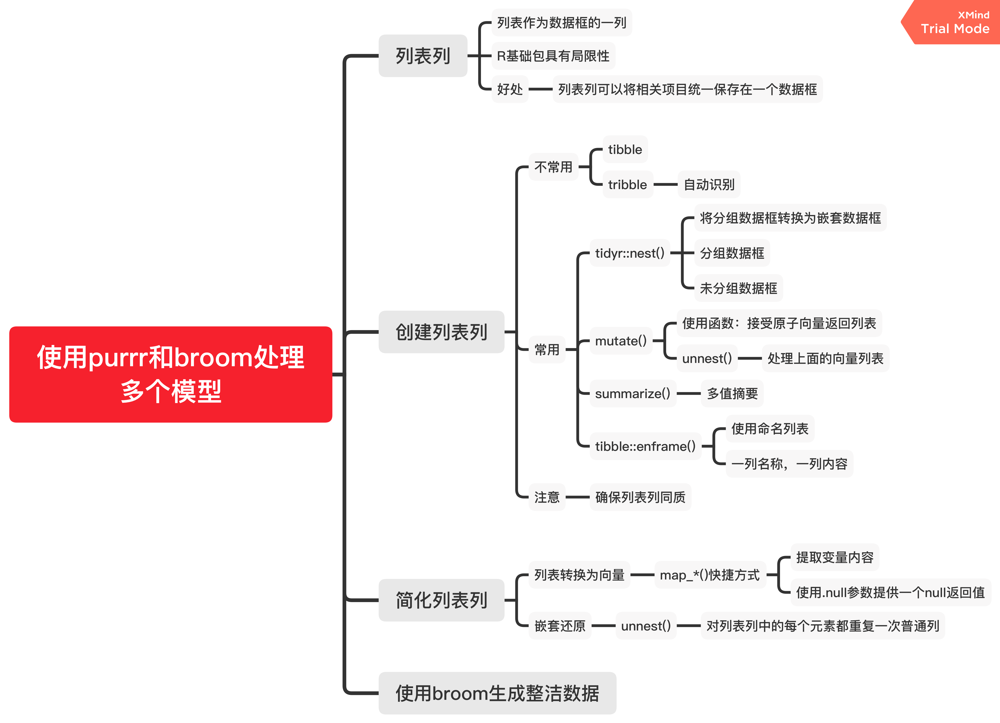

20 Many models
20.1 gapminder
对gapminder这个数据表进行分析一下。
# 载入数据包
library(gapminder)
gapminder
#> # A tibble: 1,704 x 6
#> country continent year lifeExp pop gdpPercap
#> <fct> <fct> <int> <dbl> <int> <dbl>
#> 1 Afghanistan Asia 1952 28.8 8425333 779.
#> 2 Afghanistan Asia 1957 30.3 9240934 821.
#> 3 Afghanistan Asia 1962 32.0 10267083 853.
#> 4 Afghanistan Asia 1967 34.0 11537966 836.
#> 5 Afghanistan Asia 1972 36.1 13079460 740.
#> 6 Afghanistan Asia 1977 38.4 14880372 786.
#> # ... with 1,698 more rows20.1.1 初识数据
str(gapminder)
#> tibble [1,704 x 6] (S3: tbl_df/tbl/data.frame)
#> $ country : Factor w/ 142 levels "Afghanistan",..: 1 1 1 1 1 1 1 1 1 1 ...
#> $ continent: Factor w/ 5 levels "Africa","Americas",..: 3 3 3 3 3 3 3 3 3 3 ...
#> $ year : int [1:1704] 1952 1957 1962 1967 1972 1977 1982 1987 1992 1997 ...
#> $ lifeExp : num [1:1704] 28.8 30.3 32 34 36.1 ...
#> $ pop : int [1:1704] 8425333 9240934 10267083 11537966 13079460 14880372 12881816 13867957 16317921 22227415 ...
#> $ gdpPercap: num [1:1704] 779 821 853 836 740 ...数据包括各国预期寿命，人均GDP和人口数据的摘录。各个字段含义如下：
country：国家。因子变量，142个水平。
continent：国家所属大洲。因子变量，5个水平。
year：年份。1952-2007，每5年一个记录。
lifeExp：预期寿命。
pop：人口数。
gdpPercap：人均国内生产总值。
20.1.2 案例研究
问题：每个国家(country)的预期寿命(lifeExp)是如何随时间(year)变化的?

可以看到，总的来说，预期寿命似乎一直在稳步提高。然而，如果仔细观察，我们可能会注意到一些国家没有遵循这种模式。为了使这些国家更容易被看到，我们可以使用线性趋势拟合模型，解释模型随时间稳定的部分，再从残差中研究剩余的部分。
对于某一个国家，这样的工作并不困难。
nz <- filter(gapminder, country == "China")
nz %>%
ggplot(aes(year, lifeExp)) +
geom_line() +
ggtitle("Full data = ")
nz_mod <- lm(lifeExp ~ year, data = nz)
nz %>%
add_predictions(nz_mod) %>%
ggplot(aes(year, pred)) +
geom_line() +
ggtitle("Linear trend + ")
nz %>%
add_residuals(nz_mod) %>%
ggplot(aes(year, resid)) +
geom_hline(yintercept = 0, colour = "white", size = 3) +
geom_line() +
ggtitle("Remaining pattern")
对于多个国家，我们可以使用purrr的map函数，但我们需要先构建每个国家的嵌套数据框。
by_country <- gapminder %>%
group_by(country, continent) %>%
nest()
head(by_country)
#> # A tibble: 6 x 3
#> # Groups: country, continent [6]
#> country continent data
#> <fct> <fct> <list>
#> 1 Afghanistan Asia <tibble [12 x 4]>
#> 2 Albania Europe <tibble [12 x 4]>
#> 3 Algeria Africa <tibble [12 x 4]>
#> 4 Angola Africa <tibble [12 x 4]>
#> 5 Argentina Americas <tibble [12 x 4]>
#> 6 Australia Oceania <tibble [12 x 4]>这是一个嵌套数据框，它的data列是一列数据框。
这时可以对每个国家拟合模型了：
country_model <- function(df) {
lm(lifeExp ~ year, data = df)
}
by_country <- by_country %>%
mutate(model = map(data, country_model))再对于每个模型添加残差：
by_country <- by_country %>%
mutate(
resids = map2(data, model, add_residuals)
)
by_country
#> # A tibble: 142 x 5
#> # Groups: country, continent [142]
#> country continent data model resids
#> <fct> <fct> <list> <list> <list>
#> 1 Afghanistan Asia <tibble [12 x 4]> <lm> <tibble [12 x 5]>
#> 2 Albania Europe <tibble [12 x 4]> <lm> <tibble [12 x 5]>
#> 3 Algeria Africa <tibble [12 x 4]> <lm> <tibble [12 x 5]>
#> 4 Angola Africa <tibble [12 x 4]> <lm> <tibble [12 x 5]>
#> 5 Argentina Americas <tibble [12 x 4]> <lm> <tibble [12 x 5]>
#> 6 Australia Oceania <tibble [12 x 4]> <lm> <tibble [12 x 5]>
#> # ... with 136 more rows嵌套数据框好处理，但要展示出来还得解除嵌套(unnest)：
resids <- unnest(by_country, resids)
resids
#> # A tibble: 1,704 x 9
#> # Groups: country, continent [142]
#> country continent data model year lifeExp pop gdpPercap resid
#> <fct> <fct> <list> <lis> <int> <dbl> <int> <dbl> <dbl>
#> 1 Afghanist~ Asia <tibble [1~ <lm> 1952 28.8 8.43e6 779. -1.11
#> 2 Afghanist~ Asia <tibble [1~ <lm> 1957 30.3 9.24e6 821. -0.952
#> 3 Afghanist~ Asia <tibble [1~ <lm> 1962 32.0 1.03e7 853. -0.664
#> 4 Afghanist~ Asia <tibble [1~ <lm> 1967 34.0 1.15e7 836. -0.0172
#> 5 Afghanist~ Asia <tibble [1~ <lm> 1972 36.1 1.31e7 740. 0.674
#> 6 Afghanist~ Asia <tibble [1~ <lm> 1977 38.4 1.49e7 786. 1.65
#> # ... with 1,698 more rows绘制各个国家的年份-预期寿命残差图：
resids %>%
ggplot(aes(year, resid)) +
geom_line(aes(group = country), alpha = 1 / 3) +
geom_smooth(se = FALSE)
#> `geom_smooth()` using method = 'gam' and formula 'y ~ s(x, bs = "cs")'
或者对大洲进行分面绘制：
resids %>%
ggplot(aes(year, resid, group = country)) +
geom_line(alpha = 1 / 3) +
facet_wrap(~continent)
除了残差，还有很多指标可以衡量模型，可以使用broom::glance()去得到：
一般我们可以通过R平方去衡量模型解释的好坏，通过对R平方排序找出拟合不好的模型：
glance %>%
arrange(r.squared)
#> # A tibble: 142 x 17
#> # Groups: country, continent [142]
#> country continent data model resids r.squared adj.r.squared sigma statistic
#> <fct> <fct> <lis> <lis> <list> <dbl> <dbl> <dbl> <dbl>
#> 1 Rwanda Africa <tib~ <lm> <tibb~ 0.0172 -0.0811 6.56 0.175
#> 2 Botswa~ Africa <tib~ <lm> <tibb~ 0.0340 -0.0626 6.11 0.352
#> 3 Zimbab~ Africa <tib~ <lm> <tibb~ 0.0562 -0.0381 7.21 0.596
#> 4 Zambia Africa <tib~ <lm> <tibb~ 0.0598 -0.0342 4.53 0.636
#> 5 Swazil~ Africa <tib~ <lm> <tibb~ 0.0682 -0.0250 6.64 0.732
#> 6 Lesotho Africa <tib~ <lm> <tibb~ 0.0849 -0.00666 5.93 0.927
#> # ... with 136 more rows, and 8 more variables: p.value <dbl>, df <dbl>,
#> # logLik <dbl>, AIC <dbl>, BIC <dbl>, deviance <dbl>, df.residual <int>,
#> # nobs <int>一些比较差的模型似乎都在非洲：

或者我们可以把拟合效果最差的一些模型筛选出来，并绘制它们的年份-预期寿命图像：
bad_fit <- filter(glance, r.squared < 0.25)
gapminder %>%
semi_join(bad_fit, by = "country") %>% # 筛选连接，保留匹配
ggplot(aes(year, lifeExp, colour = country)) +
geom_line()
影响因素主要是艾滋病与种族灭绝。
20.2 思维导图
